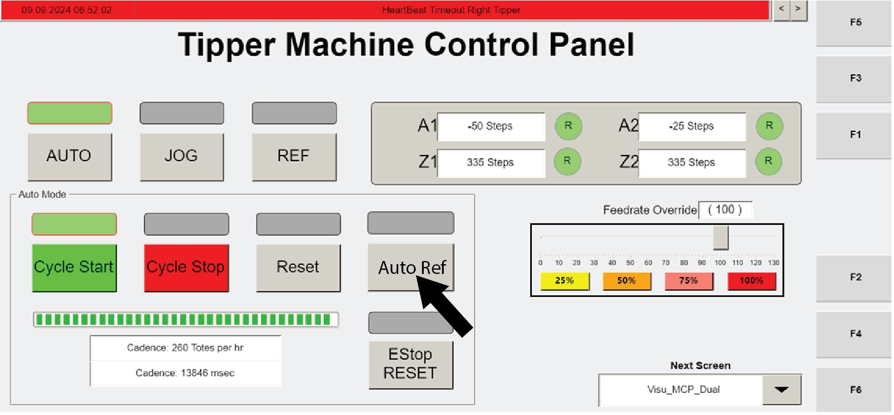
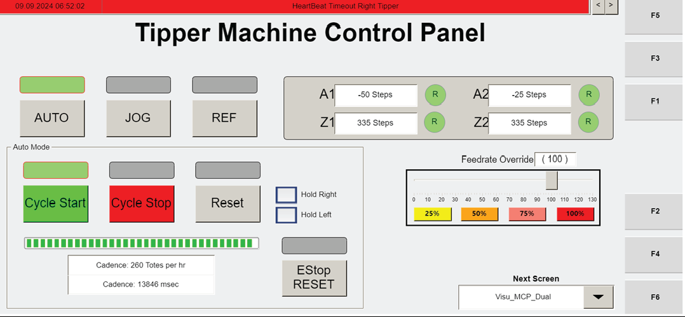

Open the manual referencing screen and stop the automatic tipping cycle
Procedure Type
operation
Primary Role
L2_support
Support Safe
Yes
Validation Status
needs_sme_review
Merge Status
source_finalized
Summary
Access the operator station HMI screen used for manual maintenance positioning and stop the automatic tipping cycle by navigating to the "Visu_Dual_MCP" screen with F3 and pressing CYCLE STOP.
When To Use
Use when preparing to manually position the end effector for maintenance procedures from the operator station HMI, as described in the manual referencing context.
Procedure Steps
Step 1 — Open the Visu_Dual_MCP screen
Responsible role: L2_support
Instruction:
On the operator station HMI, navigate to the "Visu_Dual_MCP" screen using F3.
Expected result:
The "Visu_Dual_MCP" screen is displayed on the operator station HMI.
Screens / Images:

Operator station HMI screen associated with manually referencing axes; use it to confirm the correct maintenance-related screen context.

Operator station HMI artifact on page 103 showing the manual referencing context and the Visu_Dual_MCP navigation reference.
Stop or Escalate If:
The HMI does not allow navigation to the "Visu_Dual_MCP" screen.
The displayed screen does not match the maintenance/manual referencing context supported by the source.
Additional manual movement steps are needed, since they are not included in the supplied source excerpt.
Step 2 — Stop the automatic tipping cycle
Responsible role: L2_support
Instruction:
Press CYCLE STOP on the operator station HMI to stop the automatic tipping cycle.
Expected result:
The automatic tipping cycle is stopped.
Screens / Images:
Locate the CYCLE STOP control on the operator station control panel figure.Use the page 103 operator station HMI artifact to confirm the maintenance/manual referencing screen context where CYCLE STOP is used.Use the page 103 operator station HMI artifact to confirm the same manual referencing context and expected HMI view.
Stop or Escalate If:
CYCLE STOP does not stop the automatic tipping cycle.
The HMI does not show the expected control state after pressing CYCLE STOP.
Further manual positioning instructions are required, because they are not present in the supplied source packet.